Sticky Notes has been part of Windows since at least Windows 7. For those who aren’t familiar with it, Sticky Notes allows the user to add a quick note to their desktop. Here’s a screenshot of one on a Windows 10 machine: 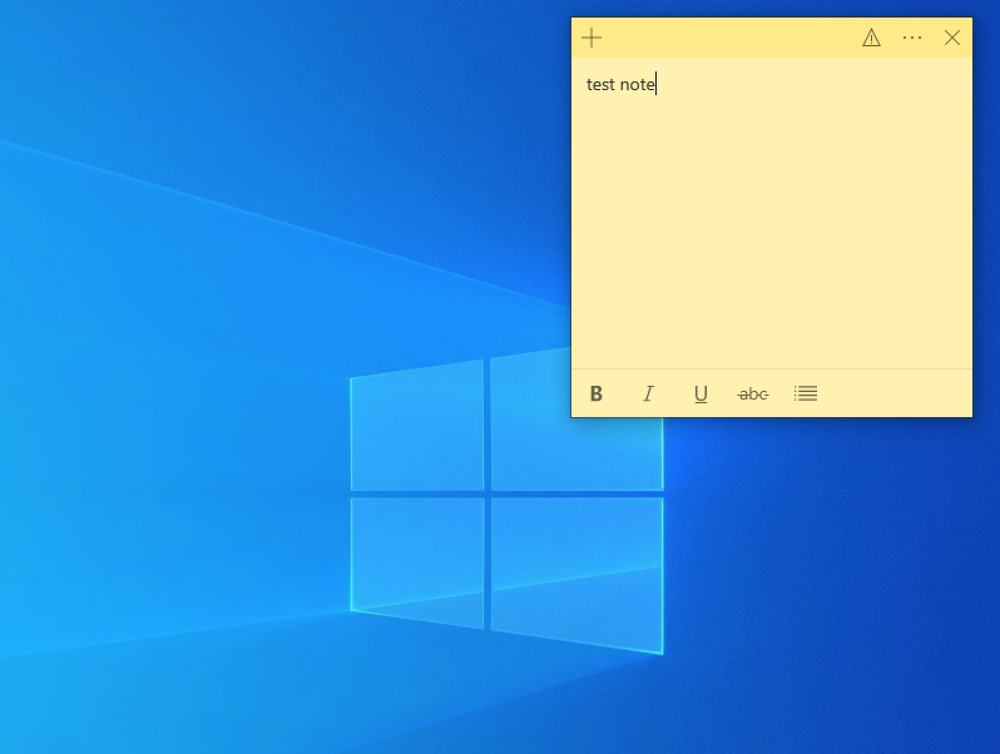 There will always be a chance that a user will leave something interesting in one of these notes, so knowing how to read them could be useful. While we might just be able to screenshot the contents, in this post we are going to look at how we can read the note contents from their storage files. The first thing we need to do is find the files which hold the note data. Thanks to Sysinternals, this can be easily achieved using ProcMon and a few filters. With ProcMon running, we can run Sticky Notes and save a new note, then pause the capture and add a filter for the ReadFile operation and the StickyNotes application. Scrolling through the results gives us this path in the users AppData folder, which looks promising. 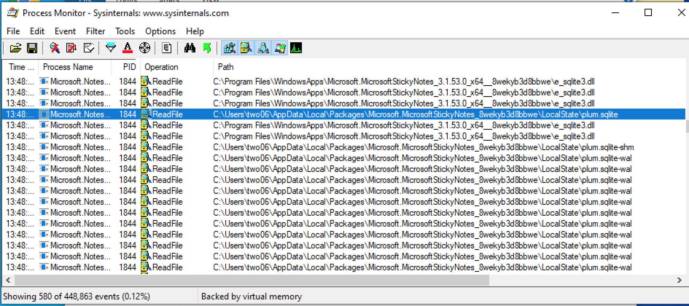 We can open this file with a SQLite browser and examine the contents. If you try and copy this somewhere else to read, you won’t get any data; you need to also copy the other SQLite related files. 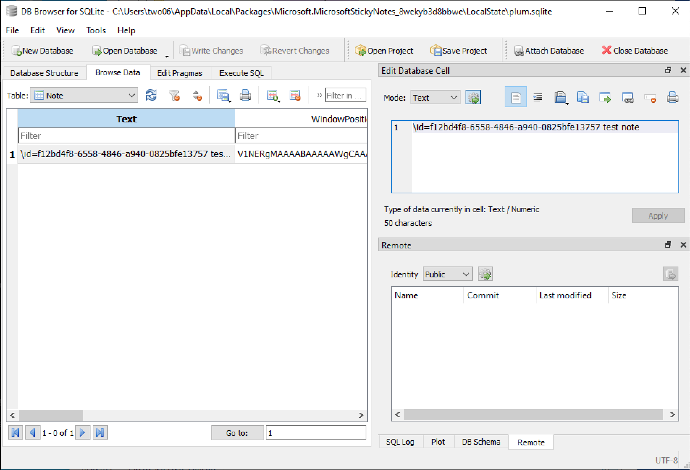 So, on our test VM (running the latest build of Win 10), we can read the note content using SQLite. We should be able to read this quite easily with C#, using the Microsoft.Data.SQLite package from NuGet. With the NuGet package installed, we just need to run a simple SELECT query to grab our data. 123456789101112131415161718192021222324252627282930313233343536static void Main(string[] args) { var appData = Environment.GetFolderPath(Environment.SpecialFolder.LocalApplicationData); var dbRelativePath = @"\Packages\Microsoft.MicrosoftStickyNotes_8wekyb3d8bbwe\LocalState\plum.sqlite"; var results = RunQuery(appData + dbRelativePath); foreach(var result in results) { Console.WriteLine(result); } Console.ReadLine(); } private static List<string> RunQuery(string dbPath) { var list = new List<string>(); using (var connection = new SqliteConnection("Data Source=" + dbPath)) { connection.Open(); var command = connection.CreateCommand(); command.CommandText = @" SELECT text FROM note "; using (var reader = command.ExecuteReader()) { while (reader.Read()) { var text = reader.GetString(0); list.Add(text); } } } return list; } This is a good start, but we should really practice some defensive programming when building our tools. In this case, we want to check the SQLite DB exists before we try and read it and handle any exceptions so we can exit our code cleanly. 1234567891011121314151617181920212223static void Main(string[] args) { var appData = Environment.GetFolderPath(Environment.SpecialFolder.LocalApplicationData); var dbRelativePath = @"\Packages\Microsoft.MicrosoftStickyNotes_8wekyb3d8bbwe\LocalState\plum.sqlite"; if(!File.Exists(appData + dbRelativePath)) { Console.WriteLine("[*] StickNotes SQLite DB not found!"); } try { var results = RunQuery(appData + dbRelativePath); foreach (var result in results) { Console.WriteLine(result); } } catch (Exception) { Console.WriteLine("[*] Exception occured reading StickyNotes DB!"); } Console.ReadLine(); } We now have a way to read the Sticky Notes data for newer versions of Windows 10. However, prior to the 1607 anniversary update, the notes data was not stored in a SQLite DB. Instead, it was stored in a COM Structured Storage object (if you’re wondering how I know this, I googled it). I don’t have an old version of Windows 10, but I do have a Win 7 VM. We could repeat the ProcMon step above, or we could just google the path. In either case, we should find the notes data stored in a .snt file in the users AppData Roaming directory. 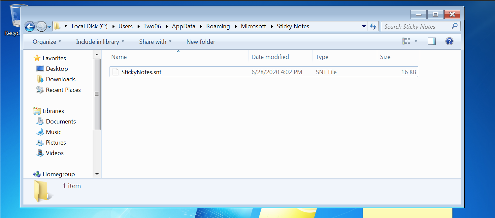 7zip can open these files, which shows the contents of the storage object. 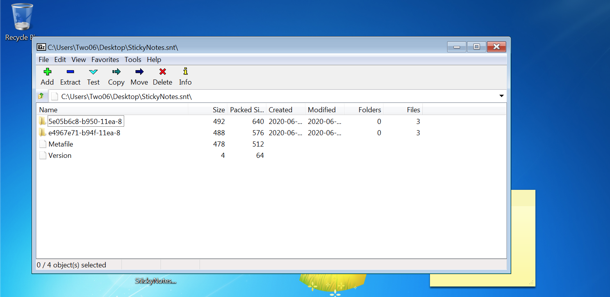 The folders contain three files. 0 contains the data in RTF format, and 3 contains the raw text. For the remainder of this post, we will use file 3. 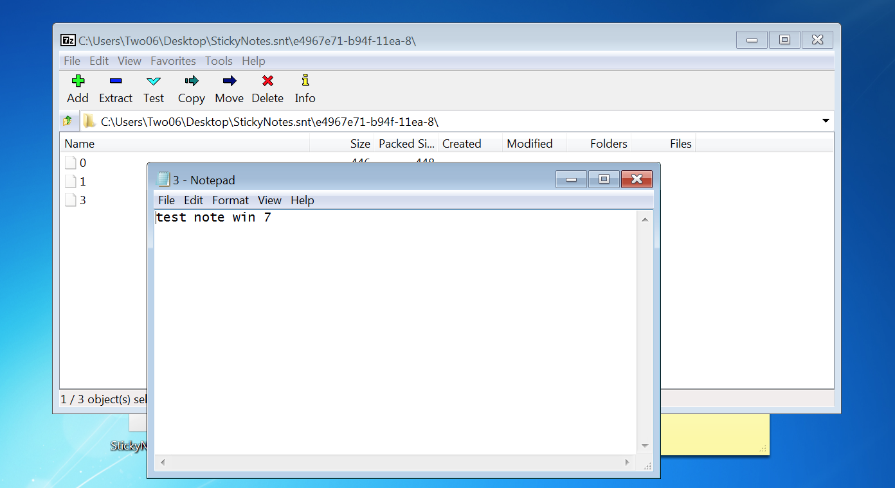 The file is a COM Structured Storage object. OLE uses this structure quite heavily, so tools exist to read the file contents. We can verify the file is indeed this format using the python olefile tool 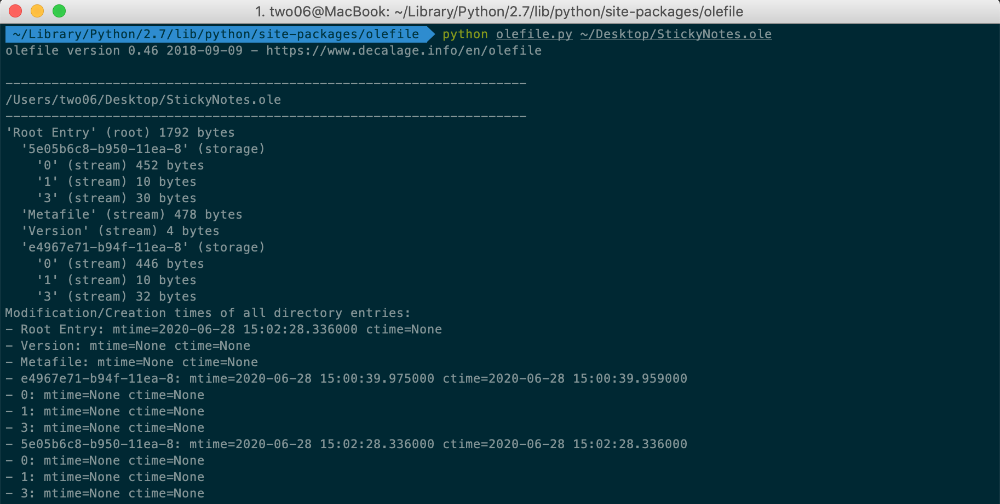 As 7-ZIP can open these files, we could try opening it as a zip stream in C#, but unfortunately this won’t work. We will have to implement a reader for the COM Structured Storage format instead. Luckily, this has already been covered in great detail here so we don’t need to start from scratch. After sorting out the DLLImports and referenced types (using PINVOKE.NET and the above article), we can build a method to read the contents of the storage. This code gets the type and the name. 123456789101112131415161718192021222324252627public static List<string> readFile(string path) { var data = new List<string>(); var isOLE = StructuredStorage.StgIsStorageFile(path); if (isOLE == 0) { //open the storage IStorage Is; int result = StgOpenStorage(path, null, STGM.READ | STGM.SHARE_EXCLUSIVE, IntPtr.Zero, 0, out Is); //set up to fetch one item on each call to next IEnumSTATSTG SSenum; Is.EnumElements(0, IntPtr.Zero, 0, out SSenum); var SSstruct = new System.Runtime.InteropServices.ComTypes.STATSTG[1]; //do the loop until not more items uint NumReturned; do { SSenum.Next(1, SSstruct, out NumReturned); if (NumReturned != 0) { data.Add(SSstruct[0].pwcsName + " " + SSstruct[0].type.ToString()); } } while (NumReturned > 0); } return data; } When executed, we can see see the contents in the Autos pane. If you’re wondering how I tested this, I copied the .snt file from my Win 7 VM to my Win 10 VM, which has my dev environment set up. 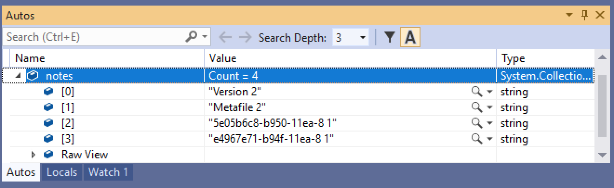 Looking at our data, and the STGTY enum below, we can see that our storage object contains nested storage. 1234567enum STGTY :int{ STGTY_STORAGE = 1, STGTY_STREAM = 2, STGTY_LOCKBYTES = 3, STGTY_PROPERTY = 4}; This fits with what 7zip told us, the nested storage is the folders created for each note. We need to modify our code to handle nested storage. This is an ideal candidate for a recursive function. 12345678910111213141516171819202122232425262728293031323334353637383940414243444546474849505152535455565758596061626364656667public List<string> readFile(string path){ var data = new List<string>(); var isOLE = StructuredStorage.StgIsStorageFile(path); if (isOLE == 0) { //open the storage IStorage Is; int result = StgOpenStorage(path, null, STGM.READ | STGM.SHARE_EXCLUSIVE, IntPtr.Zero, 0, out Is); //set up to fetch one item on each call to next IEnumSTATSTG SSenum; Is.EnumElements(0, IntPtr.Zero, 0, out SSenum); var SSstruct = new System.Runtime.InteropServices.ComTypes.STATSTG[1]; //do the loop until not more items uint NumReturned; do { SSenum.Next(1, SSstruct, out NumReturned); if (NumReturned != 0) { if(SSstruct[0].type == 1) { OpenSubStorage(Is, SSstruct[0].pwcsName, data); } else { data.Add(SSstruct[0].pwcsName + " " + SSstruct[0].type.ToString()); } } } while (NumReturned > 0); } return data;}//No problem cant be made worse with recursion! private List<string> OpenSubStorage(IStorage Is, string pwcsName, List<string> data){ IStorage ppstg; Is.OpenStorage(pwcsName, null, (uint)(STGM.READ | STGM.SHARE_EXCLUSIVE), IntPtr.Zero, 0, out ppstg); //set up to fetch one item on each call to next IEnumSTATSTG SSenum; ppstg.EnumElements(0, IntPtr.Zero, 0, out SSenum); var SSstruct = new System.Runtime.InteropServices.ComTypes.STATSTG[1]; //do the loop until not more items uint NumReturned; do { SSenum.Next(1, SSstruct, out NumReturned); if (NumReturned != 0) { if(SSstruct[0].type == 1) { OpenSubStorage(ppstg, SSstruct[0].pwcsName, data); } else { data.Add(SSstruct[0].pwcsName + " " + SSstruct[0].type.ToString()); } } } while (NumReturned > 0); return data;} Now, when we run the project, we can see the contents of the folders 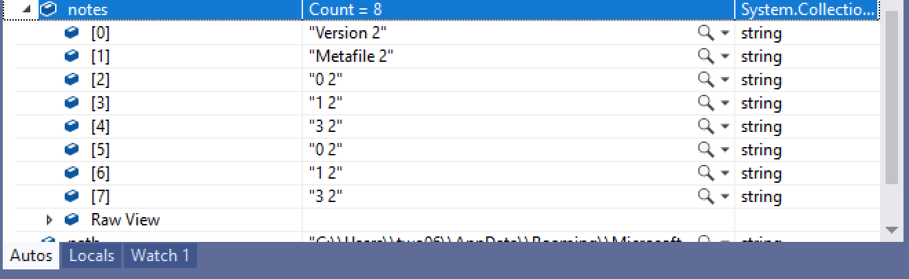 The next step is to handle the different types properly. For this post, we only need to handle type 2, or Streams 1234567891011121314private string readStream(ref IStorage Is, string pwcsName){ IStream stream; byte[] buf = new byte[1000]; IntPtr readBuffer = Marshal.AllocCoTaskMem(Marshal.SizeOf(typeof(int))); Is.OpenStream(pwcsName, IntPtr.Zero, (uint)(STGM.READ | STGM.SHARE_EXCLUSIVE), 0, out stream); stream.Read(buf, 1000, readBuffer); int intValue = Marshal.ReadInt32(readBuffer); Marshal.FreeCoTaskMem(readBuffer); //only print the number of bytes we actually read. Lets just assume we never read more than 1000 return System.Text.Encoding.Unicode.GetString(buf.Take(intValue-2).ToArray());} We use the output number of bytes read to trim the string down and output it. We drop 2 bytes to remove the trailing \0, which gives us the note content. In this example, we are reading up to a maximum of 1000 bytes. That should be sufficient for most cases, but this code will need to be modified to handle longer notes. The note content can be seen in the Autos pane when we run the project. 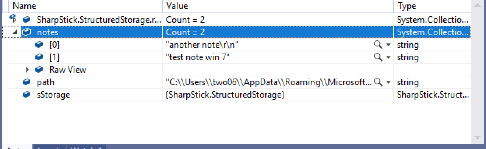 The final step is to tidy up our code. We want to be able to handle the two note storage cases, but otherwise the code will be fairly generic. This is a prime candidate for the use of interfaces. I’ve covered interfaces elsewhere in this blog, so I won’t go into any detail here. Essentially, we define an interface which we implement in a class to handle SQLite format notes, and a class to handle the Structure Storage format. We can then grab the Windows release ID and load the correct concrete class as appropriate. With our changes made, we can read the SQLite notes on a current Win 10 instance (there was no way I’d pass up a chance to name a tool “SharpStick”). 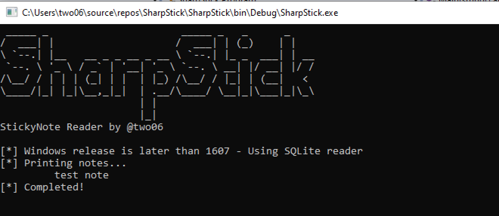 We can also read a legacy SNT file (in this case I’m manually fudging the Windows Version ID in my code). 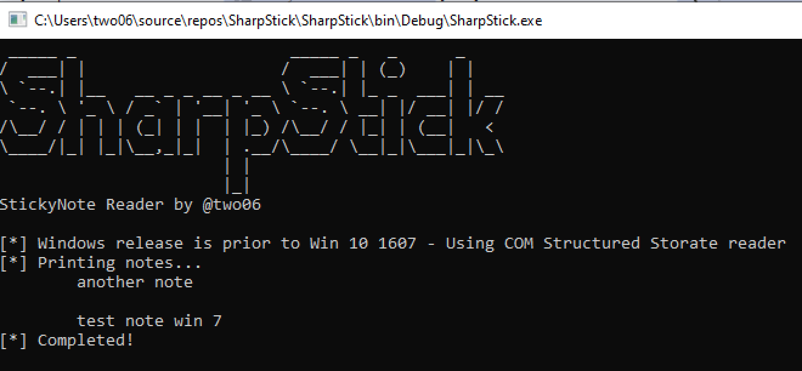 SQLite introduces a lot of dependencies, we can use Fody to pack everything into one big EXE. Unfortunately, this results in an EXE which is around 1.6Mb. The limit for Cobalt Strikes execute-assembly is 1Mb, so we won’t be able to use this tool via CS in its current form. You can find the code for this tool in its current state here: There’s a lot of room for improvement here. It should be possible to remove the dependency on the SQLite package, which will drop the EXE size and allow us to run it with execute-assembly. I’ve also not tested this on Win 7, so there may be some bugs to iron out there. With minimal changes you can also pass a path to a file in to the program directly, which will allow the code to work against note files downloaded from compromised endpoints for off-line parsing. To wrap things up, we now know how to read the two types of storage used by Microsoft Sticky Notes and have a way to extract the note content and tooling which can be futher improved as required. Next Post→